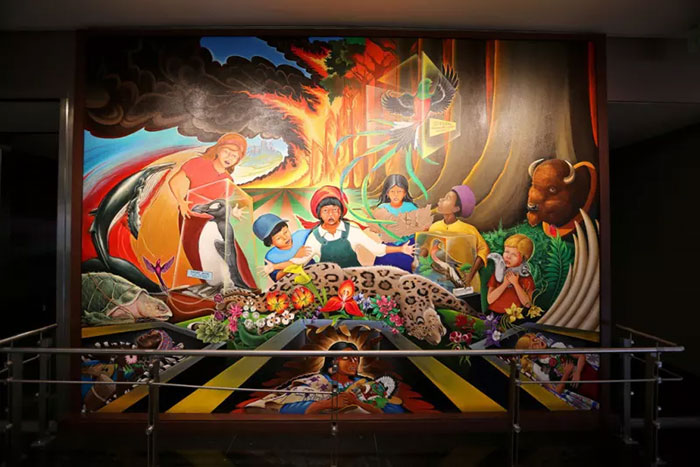

Bandara Internasional Denver adalah salah satu bandara yang lebih dikenal untuk dikunjungi di Amerika Serikat, dengan atapnya yang memuncak yang dirancang agar terlihat seperti Rocky Mountains yang tertutup salju. Ini juga salah satu bandara yang lebih menarik, dengan banyak teori konspirasi seputar seni, arsitektur, dan konstruksi uniknya yang telah memicu imajinasi pengunjung bandara dan blogger internet. Inilah kisah di balik beberapa teori konspirasi paling terkenal di Denver International Airport. Bandara dikendalikan oleh masyarakat rahasia. Ada beberapa alasan mengapa teori ini mendapatkan popularitas. Sebuah plakat dedikasi di pintu masuk selatan bandara mengandung simbol Freemason dan berisi kapsul waktu. Ini bahkan menyebutkan sesuatu tentang Komisi Bandara Dunia Baru. Ada juga simbol di seluruh bandara yang sering dikaitkan dengan beberapa bahasa atau kode tersembunyi. Semua ini telah menyebabkan spekulasi bahwa bandara mungkin berada di bawah kendali Orde Dunia Baru.Kebenarannya kurang menarik. Plakat pengabdian memang memiliki hubungan dengan Freemason, yang juga merupakan tatanan persaudaraan yang sah. Kapsul waktu, yang akan dibuka di 2094, mengandung tidak lebih dari beberapa item signifikansi historis Denver. Dan untuk bahasa rahasia itu? Itu Navajo.
Bandara memiliki bunker rahasia (dan alien). Beberapa teori konspirasi percaya ada bunker tersembunyi, atau bunker, di bawah bandara yang dirancang untuk menyelamatkan elit global dunia dalam hal semacam skenario hari kiamat; ini juga berhubungan dengan bandara yang secara diam-diam dijalankan oleh Tata Dunia Baru. Beberapa ahli teori ini mengambil satu langkah lebih jauh dan berpendapat bahwa bunker bawah tanah ini juga menyembunyikan bukti keberadaan alien atau Lizard People.Beberapa klaim ini berasal dari kontraktor asli yang bekerja di bandara dan melaporkan melihat pintu masuk bunker dan terowongan yang tidak terjelaskan. Ada gambar "alien" di dinding dan beberapa rekaman "orang-orang kadal" yang sangat buram di situs-situs konspirasi.Sebenarnya, sepasang terowongan 7,000-foot-long (2,134 meter) berjalan di samping kereta bawah tanah bandara di mana hampir 1,000 orang bekerja setiap hari mengangkut koper. Sebagian besar gambar di terowongan, termasuk benda-benda tidak berbahaya seperti wajah tersenyum, telah ditambahkan ke dinding oleh orang-orang yang bekerja di sana. Dan kadang-kadang, pekerja bandara saling bergurau, dan media, dengan topeng kadal, yang mungkin menjelaskan sebagian dari rekaman kasar itu.
Seni bandara menandakan kiamat.
Bandara Internasional Denver memiliki koleksi seni publik 40-piece yang luar biasa. Dan menurut banyak teori konspirasi, pokok bahasan karya seni ini menunjuk pada rencana organisasi yang menyeramkan seperti Illuminati, Tata Dunia Baru, dan bahkan Nazi.28-foot-wide (8.5 meter) mural oleh seniman Leo Tanguma adalah potongan populer untuk spekulasi. Banyak yang menunjuk pada citra Nazi atau fasis dalam lukisan-lukisan Tanguma, serta ikonografi Freemason yang diduga. Para ahli teori juga menunjukkan patung-patung gargoyle di dekat area klaim bagasi sisi timur dan barat dan rasa firasat yang mereka berikan. Terakhir, fakta bahwa sepotong 32-foot (9.8-meter), 9,000-pound (4,082-kilogram) patung Mustang luar dekat Peña Boulevard jatuh dan membunuh penciptanya, Luis Jiménez jelas merupakan pertanda. Orang bahkan menyebutnya "Blucifer."Kenyataannya, mural Tanguma menceritakan kisah kedamaian dan kepedulian terhadap lingkungan setelah masa perang dan polusi. Mural, Anak-anak dari World Dream of Peace, dimaksudkan untuk dibaca dari kanan ke kiri sebagai akhir cerita pelangi. Jika Anda melihat lebih dekat pada figur gargoyle, mereka bermunculan koper-koper dalam tampilan yang menyenangkan dan merupakan simbol perlindungan lama. Akhirnya, fitur "Blucifer" yang paling terkenal, mata merah, hanyalah sebuah penghormatan kepada ayah artis - pembuat neon sign. Tidak ada yang jahat tentang hal itu.